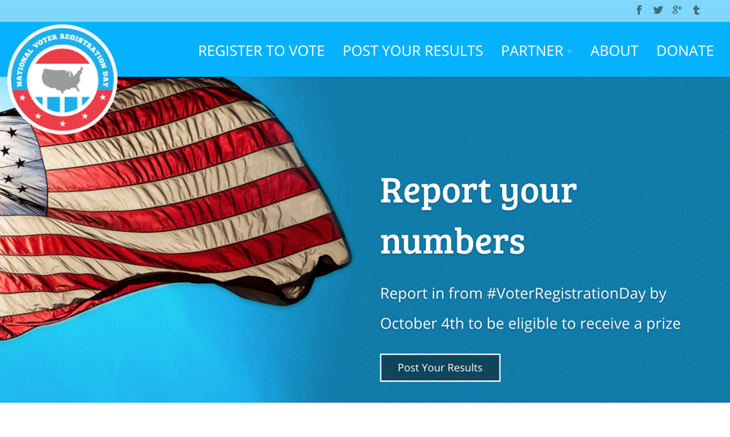
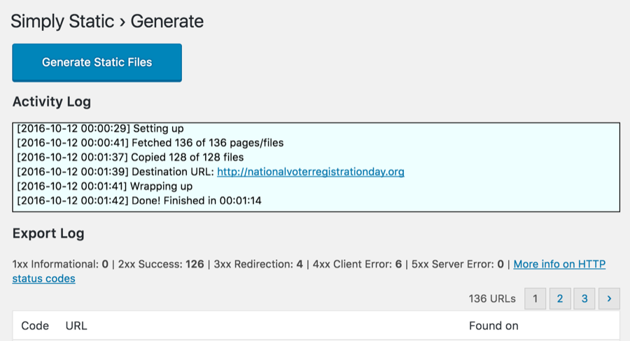
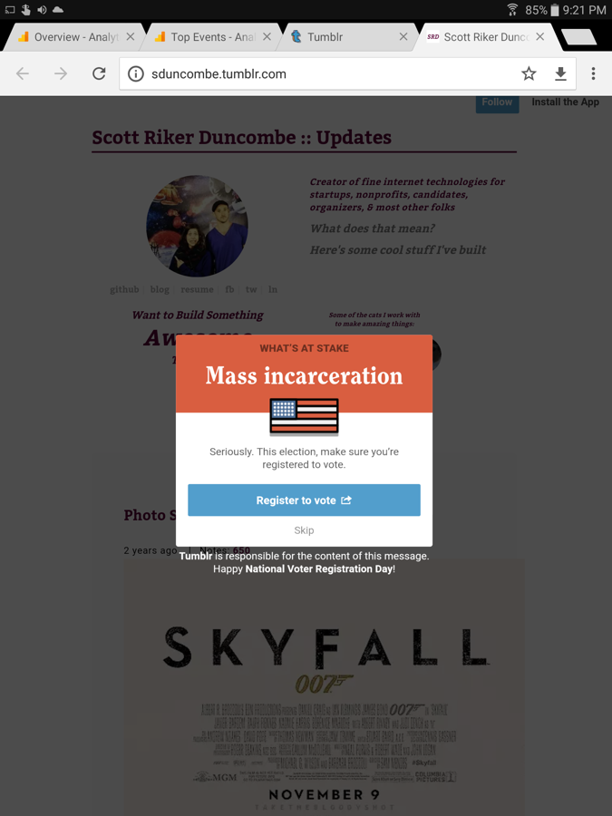
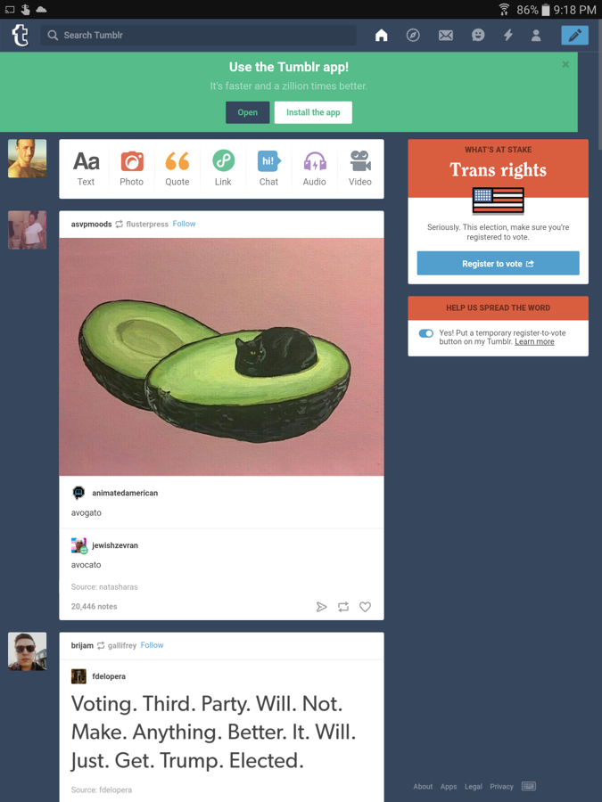

Nº 05 · Habitat I — Democracy & elections
National Voter Registration Day
WordPress scaled to a static site on S3 to survive half a million holiday visitors — for tens of dollars.
- First observed
- 2016
- With
- The Bus Federation
Scaling WordPress with S3 & AWS – with the Bus Federation.
Helped the Bus Federation migrate their WordPress website to a static-only version of their site and deploy that site on AWS's S3 service to handle nearly half a million visitors from sites like Tumblr and Reddit.
I was able to keep the admin interface intact for users by setting up a separate subdomain to host the WordPress site while leveraging the Simply Static plugin and writing a sync-files job to keep the static site synchronized with S3. S3 was able to easily handle the holiday traffic while keeping hosting costs in the tens of dollars.
Plates · from the field



